직업상담사-2급 (2010-05-06 기출문제)
1과목: 직업상담학
1. Phillips가 제시한 상담목표에 따른 진로문제의 분류 범주를 따른다면, 내담자가 자기의 능력이 어느정도인지, 어떤 분야의 직업을 원하는지, 왜 일하는 것이 싫은지 등의 고민을 가지고 있는 경우 상담의 초점은 다음 중 어디에 두어야 하는가?
- 자기탐색과 발견
- 선택의 준비도
- 의사결정 과정
- 선택과 결정
(정답률: 83%)

2. 진로상담 및 직업상담의 과정을 순서대로 바르게 나열한 것은?
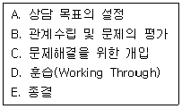
- A→B→C→D→E
- B→A→C→D→E
- A→B→D→C→E
- B→D→A→C→E
(정답률: 78%)
3. 상담 과정에서 내담자에게 상담과정에 대해 의도적으로 설명하거나 제약을 가하는 상담기법에 해당하는 것은?
- 구조화
- 명료화
- 해석
- 반영
(정답률: 61%)
4. 다음 중 집단직업상담에 관한 설명으로 가장 적합하지 않은 것은?
- 집단직업상담은 일반적으로 직업성숙도가 높은 사람들에게 더 효과적이다.
- 가능한 모임의 횟수를 최소화해야 한다.
- 남성과 여성은 집단직업상담에 임할 때의 목표가 서로 다를 수 있으므로 성별을 고려해야 한다.
- Butcher는 집단직업상담의 3단계로 탐색단계, 전환단계, 행동단계를 제시하였다.
(정답률: 80%)
5. 진로 선택과 관련된 이론으로 인생초기의 발달 과정을 중시하는 이론은?
- 인지적 정보처리이론
- 정신분석이론
- 사회학습이론
- 발달이론
(정답률: 71%)
6. 내담자가 빈 의자(Empty Chair)를 앞에 놓고 어떤 사람이 실제 앉아 있는 것처럼 상상하면서 이야기를 하는 치료기법은 어떤 상담기법에 해당하는가?
- 게슈탈트(Gestalt) 상담
- 현실 요법적 상담
- 동양적 상담
- 역설적 상담
(정답률: 84%)
7. 일반적으로 상담자가 갖추어야 할 기법 중 내담자가 전달하려는 내용에서 한 걸음 더 나아가 그 내면적 감정에 대해 반영하는 것은?
- 해석
- 공감
- 명료화
- 직면
(정답률: 74%)
8. 다음 중 현실치료의 특징으로만 짝지어진 것은?
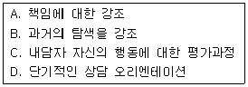
- A, B, C
- A, B, D
- B, C, D
- A, C, D
(정답률: 68%)
9. 다음 상담 장면은 진로상담의 어떤 편견에 해당하는가?
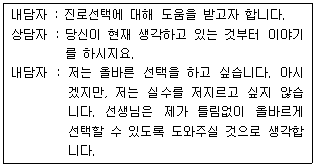
- 진로상담의 정확성에 대한 오해
- 일회성 결정에 대한 편견
- 적성 ㆍ 심리검사에 대한 과잉신뢰
- 흥미와 능력개념의 혼동
(정답률: 63%)
10. 체계적 둔감화의 3단계를 순서대로 바르게 나열한 것은?
- 근육 이완훈련 → 불안위계목록 작성 → 둔감화
- 둔감화 → 근육 이완훈련 → 불안위계목록 작성
- 불안위계목록 작성 → 둔감화 → 근육 이완훈련
- 근육 이완훈련 → 둔감화 → 불안위계목록 작성
(정답률: 73%)
11. 다음 중 내담자 중심의 상담 목표와 가장 거리가 먼 것은?
- 내담자의 내적 기준에 대한 신뢰를 증가시키도록 도와주는 것.
- 경험에 보다 개방적이 되게끔 도와주는 것.
- 지속적인 성장 경향성을 촉진시켜 주는 것.
- 내담자의 자유로운 선택과 책임의식을 증가시켜 주는 것.
(정답률: 43%)
12. 다음 중 생애진로사정에 관한 설명으로 틀린 것은?
- 생애진로사정은 검사실시나 검사해석의 예비적 단계를 끝내고 실시하는 단계이다.
- 구조화된 면담기술로서 비교적 짧은 시간 내에 내담자에 대한 정보를 수집하는 단계이다.
- 내담자가 하는 일의 유형이나 내담자의 정보를 처리하고 의사결정을 돕는 방법을 모색할 수 있는 단계이다.
- 직업상담의 주제와 관심을 표면화하는데 덜 위협적인 방법의 단계이다.
(정답률: 67%)
13. 특성-요인 직업상담에서 중요시하는 효과적인 면담기법에 관한 설명으로 옳은 것은?
- 가능한 제한된 폐쇄형 질문을 사용해서 면담의 초점을 좁혀야 한다.
- 상담자는 말을 많이 해서 내담자가 충분한 자기 탐색을 하도록 정보를 제공한다.
- 내담자가 침묵할 때는 섣불리 말하지 말고 침묵의 의미를 이해한 후 말을 꺼낸다.
- 문제해결 능력이 없는 내담자가 말을 많이 하는 것은 상담과정을 산만하게 하므로 가급적 발언을 억제한다.
(정답률: 68%)
14. 상담의 진행단계별 특징에 관한 설명으로 옳은 것은?
- 초기 단계의 주요 작업은 상담에 대한 구조화이다.
- 중기 단계의 주요 작업은 내담자와 상담자간의 촉진적인 관계 형성이다.
- 종결 단계의 주요 작업은 문제 해결단계이다.
- 초기 단계의 주요 작업은 과정적 목표의 설정과 달성이다.
(정답률: 61%)
15. 진로 및 직업선택에 관한 설명으로 가장 적합한 것은?
- 의사결정은 진로 상담의 핵심이다.
- 자기 탐색은 의사 결정의 이후 단계에 속한다.
- 의사결정을 한 후에 즉시 직업에 대한 정보량을 확보한다.
- 각종 검사에 의존하여 자신을 이해하는데 주력한다.
(정답률: 75%)
16. 교류분석에서 사용하는 대표적인 성격 자아상태가 아닌 것은?
- 부모 자아(parent ego)
- 성인 자아(adult ego)
- 청년 자아(youth ego)
- 아동 자아(child ego)
(정답률: 81%)
17. 내담자의 인지적 명확성을 위한 직업상담 과정을 바르게 나열한 것은?
- 내담자와의 관계 → 진로와 관련된 개인적 사정 → 직업선택 → 정보통합과 선택
- 직업탐색 → 내담자와의 관계 → 정보통합과 선택 → 직업선택
- 내담자와의 관계 → 인지적 명확성/동기에 대한 사정 → 예/아니오 → 개인상담/직업상담
- 개인상담/직업상담 → 내담자와의 관계 → 인지적 명확성/동기에 대한 사정 → 예/아니오
(정답률: 81%)
18. 다음 중 포괄적 직업상담 프로그램의 문제점으로 적합한 것은?
- 직업결정 문제의 원인으로 불안에 대한 이해와 불안을 규명하는 방법이 결여되어 있다.
- 직업상담의 문제 중 진학상담과 취업상담에 적합할 뿐 취업 후 직업적응 문제들을 깊이 있게 다루지 못하고 있다.
- 직업선택에 미치는 내적 요인의 영향을 지나치게 강조한 나머지 외적 요인의 영향에 대해서는 충분하게 고려하고 있지 못하다.
- 직업상담사가 교훈적 역할이나 내담자의 자아를 명료화하고 자아실현을 시킬 수 있는 적극적 태도를 취하지 않는다면 내담자에게 직업에 대한 정보를 효과적으로 알려줄 수 없다.
(정답률: 70%)
19. Williamson은 대학생들의 직업상담 문제에 대한 분류를 시도하여 진학과 직업선택의 문제를 주요 영역으로 분류하였다. 다음 중 주요 영역에 해당하지 않는 것은?
- 직업 무선택
- 직업선택의 확신 부족
- 정보의 부족
- 현명하지 못한 직업선택
(정답률: 73%)
20. 직업상담자가 지켜야 할 윤리사항으로 가정 적합한 것은?
- 습득된 직업정보를 가지고 다니면서 직업을 찾아준다.
- 습득된 직업정보를 먼저 가까운 사람들에게 알려준다.
- 상담에 대한 이론적 지식보다는 경험적 훈련과 직관을 앞세워 구직활동을 도와준다.
- 취업알선관련 전산망의 구인ㆍ구직결과를 즉시 처리한다.
(정답률: 71%)
2과목: 직업심리학
21. 직무분석을 위하여 사용되는 표준화된 조사지 중 가장 역사가 오래된 PAQ(Position Analysis Questionnaire)는 어떤 유형이라고 할 수 있나?
- 작업자중심적
- 직무중심적
- 수행중심적
- 과제중심적
(정답률: 53%)
22. Holland가 제시한 직업유형과 그 특징을 짝지은 것으로 틀린 것은?
- 현실적 유형 - 실용적, 실제적
- 탐구적 유형 - 추상적, 과학적
- 관습적 유형 - 논리적, 체계적
- 예술적 유형 - 후원적, 양육적
(정답률: 80%)
23. 다음 중 성인기의 직업 전환을 촉진하는 요인과 가장 거리가 먼 것은?
- 전체 노동인구 중 젊은 층의 비율이 적을 경우
- 경제구조가 완전고용의 상태일 경우
- 단순직 근로자의 비율이 높을 경우
- 여성근로자의 비율이 높을 경우
(정답률: 46%)
24. 다음 중 다면적 인성검사(MMPI)에 관한 설명으로 틀린 것은?
- 대부분의 문항들이 경험주의적 접근보다는 논리적 제작방법에 의해 만들어졌다.
- 객관형 검사도구이지만 임상가의 풍부한 경험이 결과해석에 매우 중요하다.
- 검사의 일차적 목적은 정신과적 진단분류이지만, 일반적 성격특성에 관한 유추도 어느 정도 가능하다.
- 검사에 타당도 척도가 포함되어 있어 피검사자의 수검태도를 측정할 수 있다.
(정답률: 42%)
25. 다음 행동특성이 올바르게 연결된 것은?
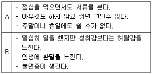
- A - 내적 소통소재, B - 외적 소통소재
- A - A형 성격, B - B형 성격
- A - 과다 과업지향성, B - 과다 인간관계지향
- A - 일 중독증, B – 소진
(정답률: 79%)
26. Mitchell과 Krumboltz가 제시한 진로선택의 사회학습이론에서 개인의 진로발달 과정과 관련이 없는 것은?
- 유전요인과 특별한 능력
- 환경조건과 사건
- 과제접근기술
- 인간관계
(정답률: 61%)
27. Lofquist와 Dawis의 직업적응이론에서 직업성격적 측면의 성격양식 차원에 대한 설명으로 틀린 것은?
- 민첩성 - 정확성 보다는 속도를 중시한다
- 역량 - 근로자의 평균활동수준을 의미한다.
- 리듬 - 활동에 대한 단일성을 의미한다.
- 지구력 - 다양한 활동수준의 기간을 의미한다.
(정답률: 80%)
28. 다음 중 특성-요인이론에 관한 설명으로 가장 적합한 것은?
- 자신이 선택한 투자에 최대한 보상을 받을 수 있는 직업을 선택한다.
- 개인적 흥미나 능력 등을 심리검사나 객관적 수단을 통해 밝혀낸다.
- 사회 ㆍ 문화적 환경 또는 사회구조와 같은 요인이 직업선택에 영향을 준다.
- 동기, 인성, 욕구와 같은 개인의 심리적 수단에 의해 직업을 선택한다.
(정답률: 66%)
29. Bandura가 제시한 사회인지이론의 3축 호혜성 인과적 모형에 속하지 않는 변인은?
- 외형적 행동
- 자기 효능감
- 외부환경 요인
- 개인과 신체적 속성
(정답률: 60%)
30. 다음 중 직무분석 절차를 바르게 나열한 것은?
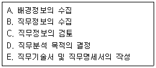
- A→B→C→D→E
- D→A→B→E→C
- D→A→B→C→E
- A→B→D→C→E
(정답률: 59%)
31. 다음 중 직업에 관련된 흥미를 측정하는 직업흥미검사가 아닌 것은?
- Strong Interest Inventory
- Vocational Preference Inventory
- Kuder Interest Inventory
- California Psychological Inventory
(정답률: 80%)
32. Gottfredson이 제시한 직업포부의 발달단계가 아닌 것은?
- 성역할 지향성
- 힘과 크기 지향성
- 사회적 가치 지향성
- 직업 지향성
(정답률: 71%)
33. 강화계획(reinforcement schedule) 중 행동 수정의 효과가 가장 약하게 나타나는 것은?
- 계속적 강화 (continuous reinforcement)
- 고정간격 강화 (fixed interval reinforcement)
- 변동간격 강화 (variable interval reinforcement)
- 변동비율 강화 (variable ratio reinforcement)
(정답률: 49%)
34. MBTI (Myers-Briggs Type Indicator)의 4개의 차원 중에서 정보를 평가하는 방식과 가장 관련이 깊은 차원은?
- 내향성(I) - 외향성(E)
- 감각형(S) - 직관형(N)
- 사고형(T) - 감정형(F)
- 판단형(J) - 지각형(P)
(정답률: 41%)
35. 경력개발을 위해 종업원들에게 다양한 직무를 경험하게 함으로써 여러 분야의 능력을 개발시키려는 제도는?
- 사내공모제
- 조기발탁제
- 후견인제
- 직무순환제
(정답률: 76%)
36. 평균이 100, 표준편차가 15 이고 정상분포를 이루고 있는 검사의 경우, 전체 사례의 68%가 속하게 되는 점수의 범위는?
- 85~115
- 70~130
- 65~145
- 50~160
(정답률: 70%)
37. 어떤 검사가 측정하고 있는 것이 이론적으로 관련이 깊은 속성과는 높은 상관을 실제로 보여주고, 관계가 없는 것과는 낮은 상관을 보여 주는 타당도는 어떤 것인가?
- 준거 관련 타당도
- 동시 타당도
- 수렴 및 변별 타당도
- 예언 타당도
(정답률: 60%)
38. 다음 중 비표준화 검사와 비교할 때 표준화 검사의 특징과 가장 거리가 먼 것은?
- 검사의 실시와 채점이 객관적이다.
- 체계적 오차는 있어도 무선적 오차는 없다.
- 신뢰도와 타당도가 비교적 높다.
- 규준집단에 비교해서 피검사자의 상대적 위치를 알 수 있다.
(정답률: 69%)
39. Lazarus의 스트레스 이론에 관한 설명으로 틀린 것은?
- 스트레스 사건 자체보다 지각과 인지 과정을 중시하는 이론이다.
- 1차 평가는 사건이 얼마나 위협적인지를 평가하는 것이다.
- 2차 평가는 자신의 대처 능력에 대한 평가이다.
- 3차 평가는 자신의 스트레스 반응에 대한 평가이다.
(정답률: 62%)
40. 다음 중 Selye가 제시한 일반적응증후군(General Adaptation Syndrome : G.A.S)의 반응단계에 해당하지 않는 것은?
- 경고단계
- 적응단계
- 저항단계
- 소진단계
(정답률: 72%)
3과목: 직업정보론
41. 한국표준직업분류(2007)의 제2직능 수준이 요구되는 대분류에 해당하지 않는 것은?
- 전문가 및 관련종사자
- 사무종사자
- 서비스종사자
- 기능원 및 관련 기능 종사자
(정답률: 64%)
42. 다음 설명에 해당하는 한국직업사전(2009)에서의 작업강도는?
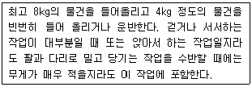
- 아주 가벼운 작업
- 가벼운 작업
- 보통작업
- 힘든 작업
(정답률: 69%)
43. 실기능력이 중요하여 노동부령이 정하는 필기시험이 면제되는 국가기술자격 기능사 종목이 아닌 것은?
- 석공기능사
- 항공사진기능사
- 한복기능사
- 조적기능사
(정답률: 63%)
44. 통계정의 경제활동인구조사에서 취업자에 대한 설명으로 틀린 것은?
- 임시근로자 - 고용계약기간이 1개월 이상 1년 미만인 자.
- 일용근로자 - 임금 또는 봉급을 받고 고용되어 있으나 고용계약기간이 1개월 미만인 자
- 자영업주 - 사업규모에 상관없이 한 사람 이상의 유급 고용원을 두거나(고용주), 유급종업원 없이 자기 혼자 또는 무급가족종사자와 함께 일을 하는 자(자영자)
- 무급가족종사자 - 자기가족의 일원이 경영하는 사업체에서 일정한 보수 없이 주당 30시간 이상 일한 자
(정답률: 60%)
45. 다음 중 민간직업정보의 특성과 가장 거리가 먼 것은?
- 필요한 시기에 최대한 활용되도록 한시적으로 신속하게 생산되어 운영된다.
- 국제적으로 인정되는 객관적인 기준에 근거하여 직업을 분류한다.
- 특정한 목적에 맞게 해당분야 및 직종을 제한적으로 선택한다.
- 시사적인 관심이나 흥미를 유도할 수 있도록 해당 직업을 분류한다.
(정답률: 74%)
46. 한국직업사전(2009)에 수록된 부가직업정보에 해당하는 것은?
- 직업코드
- 직무개요
- 산업분류
- 본 직업명칭
(정답률: 42%)
47. 한국표준직업분류(2007)에서 다수직업 종사자에 대한 분류 원칙을 바르게 나열할 것은?
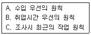
- A→B→C
- B→A→C
- B→C→A
- C→A→B
(정답률: 56%)
48. 다음 중 직업별 임금관련 정보를 제공하지 않는 것은?
- 한국직업전망
- 한국직업사전
- Job Map
- 한국직업정보시스템
(정답률: 60%)
49. 신규실업자, 전직실업자, 여성가장실업자, 영세자영업자 훈련의 대상자에게 지급하는 식비는 월 얼마인가?
- 5만 5천원
- 6만 6천원
- 7만 7천원
- 8만 8천원
(정답률: 45%)
50. 국가 직업훈련에 관한 정보를 검색할 수 있는 정보망은?
- JT-Net
- HRD-Net
- T-Net
- Training-Net
(정답률: 73%)
51. 워크넷 구인ㆍ구직 및 취업 동향을 분석할 때 사용하는 용어에 관한 설명으로 틀린 것은?
- 구인배수 : 신규구인인원 ÷ 신규구직자수
- 취업률 : (취업건수 ÷ 신규구직자수) × 100
- 희망임금충족률 : (희망임금 ÷ 제시임금) × 100
- 취업건수 : 금월 기간에 워크넷에 취업 등록된 수
(정답률: 43%)
52. 한국직업정보시스템에서 제공하는 학과정보 중 공학계열에 해당하는 학과가 아닌 것은?
- 천문우주학과
- 건축학과
- 안경광학과
- 메카트로닉스공학과
(정답률: 58%)
53. 한국직업사전(2009)의 부가직업정보 중 작업환경에 대한 설명으로 틀린 것은?
- 작업환경은 해당직업의 직무를 수행하는 작업원에게 직접적으로 물리적, 신체적 영향을 미치는 작업장의 환경요일을 나타낸 것이다.
- 작업환경의 측정은 조사자가 느끼는 신체적 반응 및 작업자의 반응을 듣고 판단한다.
- 작업환경은 저온 ㆍ 고온, 다습, 소음 ㆍ 진동, 위험내재, 대기환경으로 구분한다.
- 작업환경은 사업체의 규모와 특성에 따라 달라질 수 있으나 동일사업체의 경우에는 작업장마다 절대적인 기준이 된다.
(정답률: 66%)
54. 워크넷에서 제공하는 직업선호도검사 L형과 S형의 공동적인 하위검사는?
- 성격검사
- 흥미검사
- 생활사검사
- 구직동기검사
(정답률: 75%)
55. 직업능력개발훈련의 훈련 기간 및 시간에 관한 설명으로 틀린 것은?
- 훈련시간은 1개월 이상 1년 이하로 하되 훈련시간은 60시간 이상으로 하는 것이 원칙이다.
- 강의시간 운영은 주ㆍ야간 과정 모두 50부 강의, 10분 휴식을 원칙으로 한다.
- 사회복지시설 등에 봉사활동을 겸한 현장훈련을 실시하는 경우에는 해당시간을 훈련시간에 포함한다.
- 훈련개시 후 1주일간은 해당훈련과정에 중간편입하거나 다른 훈련과정으로 변경할 수 없다.
(정답률: 53%)
56. 서비스분야 국가기술자격 종목별 응시자격 기준으로 틀린 것은?(오류 신고가 접수된 문제입니다. 반드시 정답과 해설을 확인하시기 바랍니다.)
- 컨벤션기획사 1급 - 대학졸업자 등으로서 졸업 후 응시하고자 하는 종목이 속하는 동일직무분야에서 5년 이상 실무에 종사한 자
- 소비자전문상담사 1급 - 소비자상담 관련실무경력 5년 이상인 자
- 임상심리사 2급 - 임상심리와 관련하여 1년 이상 실습 수련을 받은 자 또는 2년 이상 실무에 종사한 자로서 대학졸업자 및 그 졸업예정자.
- 스포츠경영관리사 - 대학졸업자 등 또는 그 졸업예정자
(정답률: 24%)
57. 다음 직업정보를 제공하는 유형별 장단점에 관한 표의 ( )안에 들어갈 가장 알맞은 것은?
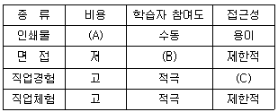
- A - 고, B - 적극, C – 용이
- A - 고, B - 수동, C - 제한적
- A - 저, B - 적극, C - 제한적
- A - 저, B - 수동, C - 용이
(정답률: 77%)
58. 한국표준산업분류(2008)의 산업분류기준이 아닌 것은?
- 산출물의 특성
- 투입물의 특성
- 생산활동의 일반적인 결합형태
- 소비활동의 일반적인 형태
(정답률: 71%)
59. 워크넷에서 제공하는 선호직종임금정보가 아닌 것은?
- 학력별 선호직종임금
- 연령별 선호직종임금
- 남녀별 선호직종임금
- 장애인 선호직종임금
(정답률: 25%)
60. 해당 종목에 관한 기술기초이론 지식 또는 숙련기능을 바탕으로 복합적인 기초기술 및 기능업무를 수행할 수 있는 능력의 보유여부를 검정기준으로 하는 국가기술자격 등급은?
- 기능장
- 기사
- 산업기사
- 기능사
(정답률: 58%)
4과목: 노동시장론
61. 다음 중 연봉제 도입의 장점과 가장 거리가 먼 것은?
- 능력과 실적이 임금과 직결되므로 능력주의, 실적주의로 종업원들에게 동기부여를 주고 근무의욕을 고취한다.
- 과감한 인재등용이 용이하다.
- 임금체계와 임금지급구조가 단순화되어 임금관리의 효율성이 높아진다.
- 경영공동체의 형성을 적극적으로 조장할 수 있다.
(정답률: 33%)
62. 다음 중 구조적 실업에 대한 대책과 가장 거리가 먼 것은?
- 경기활성화
- 직업전환교육
- 이주에 대한 보조금
- 산업구조변화 예측에 따른 인력수급정책
(정답률: 57%)
63. 다음 중 근로자측의 쟁의행위로 볼 수 없는 것은?
- 파업
- 피켓팅(picketing)
- 준법투쟁
- 대체고용
(정답률: 70%)
64. 다음 중 헤도닉의 임금이론의 가정으로 틀린 것은?
- 직장의 다른 특성은 동일하며 산업재해의 위험도도 동일하다.
- 노동자는 효용을 극대화하며 노동자간에는 산업안전에 관한 선호의 차이가 존재한다.
- 기업은 좋은 노동조건을 위해 산업안전에 투자를 해야 한다.
- 노동자는 정확한 직업정보를 갖고 있으며 직업 간 자유롭게 이동할 수 있다.
(정답률: 61%)
65. 고용되기 전에는 노동조합원일 필요가 없으나 일단 고용된 후에는 노동조합원이 되어야 고용이 유지되는 제도는?
- 클로즈드 숍(closed shop)
- 오픈 숍(open shop)
- 유니온 숍(union shop)
- 오픈-클로즈드 숍(open-closed shop)
(정답률: 61%)
66. 노동자가 기꺼이 일하려고 하는 최저한의 주관적 요구 임금수준은?
- 의중임금
- 요구임금
- 최소임금
- 최저임금
(정답률: 58%)
67. 다음 중 수요부족 실업에 해당하는 것은?
- 마찰적 실업
- 경기적 실업
- 구조적 실업
- 자발적 실업
(정답률: 65%)
68. 기혼여성의 경제활동 참가율에 관한 설명으로 틀린 것은?
- 남편의 소득이 높을수록 경제활동참가율은 하락한다.
- 가계생산의 기술이 향상될수록 경제활동참가율은 하락한다.
- 교육수준이 높을수록 경제활동참가율은 상승한다.
- 자녀의 연령이 높을수록 경제활동참가율은 상승한다.
(정답률: 64%)
69. 최근 연장근로 등 일정량 이상의 노동을 기피하는 풍조가 확산되고 있다. 이러한 현상에 대한 분석도구로 가장 적합한 것은?
- 최저임금제
- 후방굴절형 노동공급곡선
- 화폐적 환상
- 노동의 수요독점
(정답률: 71%)
70. 다음은 능률급의 어떤 형태에 해당하는가?
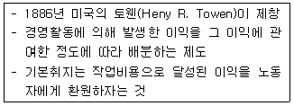
- 표준시간제
- 이익분배제
- 할시제
- 테일러제
(정답률: 72%)
71. 다음 중 내부노동시장이 강화될 가능성이 가장 높은 상황은?
- 고용형태가 다양화되고 있다.
- 구조조정이 급속히 이루어지고 있다.
- 기업 특수인적자본의 형성이 중시된다.
- 급속한 기술변화로 제품의 수명이 단축되고 수요가 안정적이지 않다.
(정답률: 59%)
72. A국가의 전체 인구 5,000만 명 중 은퇴한 노년층과 15세 미만 유년층이 각각 1,000만명이다. 또한, 취업자가 1,500만 명이고 실업자는 500만 명이라고 한다. 이 국가의 실업률(A)과 경제활동참가율(B)은?(오류 신고가 접수된 문제입니다. 반드시 정답과 해설을 확인하시기 바랍니다.)
- A - 25%, B – 40%
- A - 25%, B - 50%
- A - 33%, B – 40%
- A - 33%, B - 40%
(정답률: 56%)
73. 역사적으로 가장 오래된 노동조합의 형태는?
- 산업별 노동조합
- 기업별 노동조합
- 직업별 노동조합
- 일반 노동조합
(정답률: 61%)
74. 최종생산물이 수요자에 의하여 수요되기 때문에 그 최종생산물을 생산하는 데 투입되는 노동이 수요된다고 할 때 이러한 수요를 무엇이라고 하는가?
- 유효수요
- 잠재수요
- 파생수요
- 실질수요
(정답률: 58%)
75. 다음 중 통상임금에 관한 설명으로 틀린 것은?
- 근로자에게 정기적, 일률적으로 지급해야 한다.
- 근로의 대가로서 지급해야 한다.
- 시간 외 수당의 산정기준으로 활용된다.
- 각종 재해보상금의 산정기준이 된다.
(정답률: 61%)
76. 다음 중 성과급제도의 장점으로 옳은 것은?
- 직원 간 화합이 용이하다.
- 근로의 능률을 자극할 수 있다.
- 임금의 계산이 간편하다.
- 확정적 임금이 보장된다.
(정답률: 73%)
77. 다음 표에서 어떤 도시근로자의 실질임금을 구할 경우 A, B, C, D의 크기를 바르게 나타낸 것은?
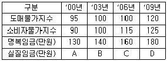
- D > B > C > A
- D > C > A > B
- A > C > B > D
- A > D > B > C
(정답률: 41%)
78. 생산요소인 노동의 수요곡선을 이동(Shift)시키는 요인이 아닌 것은?
- 임금의 변화
- 노동을 투입하여 생산한 생산물의 가격변화
- 노동생산성의 변화
- 자본생산성의 변화
(정답률: 64%)
79. “노사관계의 주체를 사용자 및 단체, 노동자 및 단체, 정부로 규정하고 이들 간의 관계는 기술, 시장 또는 예산상의 제약, 권력구조에 의해 결정된다.” 는 노사관계의 국제비교이론은?
- 시스템이론
- 수렴이론
- 분산이론
- 단체교섭이론
(정답률: 60%)
80. 다음이 설명하고 있는 단체교섭의 구조는?
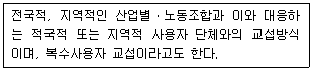
- 기업별 교섭
- 통일 교섭
- 대각선 교섭
- 집단 교섭
(정답률: 34%)
5과목: 노동관계법규
81. 직업안정법상 직업소개사업을 겸업할 수 없는 자는?
- 교육사업자
- 제조업자
- 결혼상담업자
- 식품접객업자
(정답률: 50%)
82. 근로자직업능력 개발법상 직업능력개발훈련의 기본원칙으로 가장 적합하지 않은 것은?
- 직업능력개발훈련은 근로자 개인의 희망ㆍ적성ㆍ능력에 맞게 근로자의 생애에 걸쳐 체계적으로 실시되어야 한다.
- 직업능력개발훈련은 사회적 공공성의 원리에 따라 국가주도로 진행되어야 한다.
- 직업능력개발훈련이 필요한 근로자에 대하여 균등한 기회가 보장되도록 실시되어야 한다.
- 직업능력개발훈련은 교육관계법에 따른 학교교육 및 산업현장과 긴밀하게 연계될 수 있도록 하여야 한다.
(정답률: 68%)
83. 고용정책 기본법상 노동부장관이 실시할 수 있는 실업대책사업에 해당되지 않는 것은?
- 고용촉진과 관련된 사업을 하는 자에 대한 대부
- 실업자의 취업촉진을 위한 훈련의 실시와 훈련에 대한 지원
- 실업의 예방, 실업자의 재취업 촉진, 그 밖에 고용안정을 위한 사업을 하는 자에 대한 지원
- 실업자에 대한 생계비, 국민건강보험법에 의한 보험료 등 의료비(가족의 의료비 제외), 주택매입자금 등의 지원
(정답률: 68%)
84. 고용정책 기본법령상 상시근로자 300명 이상을 사용하는 사업 또는 사업장의 대량 고용변동의 신고기준으로 옳은 것은?
- 상시 근로자 총수의 100분의 10이상
- 상시 근로자 총수의 100분의 20이상
- 상시 근로자 총수의 100분의 30이상
- 상시 근로자 총수의 100분의 40이상
(정답률: 63%)
85. 근로자직업능력 개발법령상 훈련의 목적에 따라 구분한 직업능력개발훈련에 해당하지 않는 것은?
- 양성훈련
- 집체훈련
- 향상훈련
- 전직훈련
(정답률: 71%)
86. 직업안정법상 직업안정기관의 장이 구인신청의 수리(受理)를 거부할 수 없는 경우는?
- 구인신청의 내용이 법령을 위반한 경우
- 구인신청을 구인자의 사업장소재지를 관할하는 직업안정기관에 하지 않은 경우
- 구인신청의 내용 중 임금 등 근로조건이 통상적인 근로조건에 비하여 현저하게 부적당하다고 인정되는 경우
- 구인자가 구인조건을 밝히기를 거부하는 경우
(정답률: 61%)
87. 근로기준법상 경영상 이유에 의한 해고의 요건에 관한 설명으로 틀린 것은?
- 모든 사업의 양도, 인수, 합병은 긴박한 경영상의 필요가 있는 것으로 본다.
- 사용자는 해고를 피하기 위한 노력을 다하여야 한다.
- 사용자는 합리적이고 공정한 해고의 기준을 정하고 이에 따라 그 대상자를 선정하여야 한다.
- 사용자는 근로자의 해고를 피하기 위한 방법과 해고의 기준 등에 관하여 근로자의 과반수를 대표하는 근로자 대표에게 해고를 하려는 날의 50일 전까지 통보하고 성실하게 협의하여야 한다.
(정답률: 37%)
88. 고용상 연령차별금지 및 고령자교용촉진에 관한 법률상 고령자인재은행으로 지정된 직업안정법에 따른 무료직업소개사업을 하는 비영리법인의 사업범위에 해당하지 않는 것은?
- 고령자의 직업능력개발훈련
- 고령자에 대한 구인 · 구직 등록
- 고령자에 대한 직업지도 및 취업 알선
- 취업희망 고령자에 대한 직업상담 및 정년퇴직자의 재취업 상담
(정답률: 61%)
89. 다음 ( )안에 들어갈 가장 알맞은 것은?(오류 신고가 접수된 문제입니다. 반드시 정답과 해설을 확인하시기 바랍니다.)
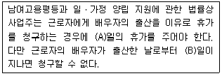
- A - 1, B – 15
- A - 1, B – 30
- A - 3, B – 15
- A - 3, B - 30
(정답률: 63%)
90. 고용상 연령차별금지 및 고령자고용촉진에 관한 법률상 정년에 관한 설명으로 틀린 것은?
- 대통령령으로 정하는 수 이상의 근로자를 사용하는 사업주가 정년제도 운영현황을 제출하지 아니한 경우에는 500만원 이하의 과태료를 부과한다.
- 노동부장관은 정년을 현저히 낮게 정한 대통령령으로 정하는 수 이상의 근로자를 사용하는 사업주에 대하여 정년의 연장을 권고할 수 있다.
- 노동부장관은 정년퇴직자를 재고용하거나 그 밖에 정년퇴직자의 고용안정에 필요한 조치를 하는 사업주에게 장려금 지급 등 필요한 지원을 해야 한다.
- 고령자인 정년 퇴직자를 재고용할 때는 당사자간의 합의에 의하여 임금의 결정을 종전과 달리할 수 있다.
(정답률: 37%)
91. 다음 중 헌법상 보장될 수 있는 쟁의행위로 볼 수 없는 것은?
- 파업
- 태업
- 직장폐쇄
- 보이콧
(정답률: 64%)
92. 남녀고용평등과 일 ㆍ 가정 양립 지원에 관한 법률상 직장 내 성희롱의 예방에 관한 설명으로 틀린 것은?
- 사업주는 직장 내 성희롱 예방을 위한 교육을 연 1회 이상 하여야 한다.
- 사업주 및 근로자 모두가 여성으로 구성된 사업의 사업주는 직장 내 성희롱 예방교육을 생략할 수 있다.
- 사업주는 성희롱 예방 교육을 노동부장관이 지정하는 기관에 위탁하여 실시할 수 있다.
- 사업주는 근로자가 고객에 의한 성희롱의 피해를 주장하는 것을 이유로 해고나 그 밖의 불이익한 조치를 하여서는 아니 된다.
(정답률: 73%)
93. 근로자직업능력 개발법령상 직업능력개발훈련교사 2급의 자격기준으로 틀린 것은?
- 직업능력개발훈련교사 3급의 자격을 취득하고 3년 이상의 교육훈련 경력이 있는 사람으로서 향상훈련을 받은 사람
- 서비스 및 사무관리 분야 자격직종의 중등학교 교사 또는 실기교사 자격 이상의 자격을 취득한 사람
- 기술사 또는 기능장 자격을 취득하고 노동부령으로 정하는 훈련ㄴ을 받은 사람
- 전문대학 ㆍ 기능대학 및 대학의 전임강사 이상으로 2년 이상의 교육훈련 경력이 있는 사람
(정답률: 44%)
94. 남녀고용평등과 일 ㆍ 가정 양립 지원에 관한 법률상 상시 5명 미만의 근로자를 사용하는 사업장에도 반드시 적용되어야 하는 것은?
- 모집과 채용에 있어서의 남녀차별금지
- 동일가치노동에 대한 동일임금지급
- 교육 ㆍ 배치 ㆍ 승진에 있어서 남녀차별금지
- 정년 ㆍ 퇴직 ㆍ 해고에 있어서의 남녀차별금지
(정답률: 55%)
95. 고용보험법규상 둘 이상의 사업에 일용근로자가 아닌 자로 동시에 고용되어 있는 경우 피보험자격을 취득하는 순서로 옳은 것은?
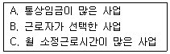
- A→B→C
- A→C→B
- B→C→A
- C→A→B
(정답률: 48%)
96. 고용보험의 심사청구와 관련된 설명으로 틀린 것은?
- 심사청구는 즉시 원처분의 집행을 정지시킨다.
- 결정은 원처분 등을 행한 직업안정기관의 장을 기속한다.
- 심사의 청구는 대통령령으로 정하는 바에 따라 문서로 하여야 한다.
- 직업안정기관은 심사청구서를 받은 날부터 5일 이내에 의견서를 첨부하여 심사청구서를 심사관에게 보내야 한다.
(정답률: 44%)
97. 근로기준법상 취업규칙에 관한 설명으로 옳은 것은?
- 상시 5명 이상의 근로자를 사용하는 사용자는 취업 규칙을 작성하여 노동부장관에게 신고하여야 한다.
- 사용자는 모든 취업규칙의 작성 또는 변경에 관하여 해당 사업 또는 사업장에 근로자의 과반수로 조직된 노동조합이 있는 경우에는 그 노동조합의 동의를 받아야 한다.
- 취업규칙에서 정한 기준에 미달하는 근로조건을 정한 근로계약은 그 부분에 관하여는 무효로 한다. 이 경우 무효로 된 부분은 취업규칙에 정한 기준에 따른다.
- 취업규칙에서 근로자에 대하여 감급(減給)의 제재를 정할 경우에 그 감액은 1회의 금액이 평균임금의 1일분의 10분의 3을, 총액이 1임금지급기의 임금 총액의 10분의 1을 초과하지 못한다.
(정답률: 48%)
98. 고용상 연령차별금지 및 고령자고용촉진에 관한 법령상 업종별 고령자 기준고용률이 틀린 것은?
- 제조업 : 상시근로자수의 100분의 2
- 운수업 : 상시근로자의 100분의 4
- 부동산 및 임대업 : 상시근로자수의 100분의 6
- 도 ㆍ 소매업 : 상시근로자수의 100분의 3
(정답률: 72%)
99. 헌법에 규정된 노동기본권에 관한 설명으로 옳은 것은?
- 근로의 권리와 근로 3권을 포함한다.
- 외국인도 근로의 권리 주체가 될 수 있다.
- 근로의 권리는 생존권적 성격 보다 자유권적 성격이 강하다.
- 근로의 권리는 국가의 적극적인 입법형성에 의해 구체화된다.
(정답률: 63%)
100. 근로기준법상 임금 지급 원칙이 아닌 것은?
- 통화불의 원칙
- 정액불의 원칙
- 직접불의 원칙
- 정기불의 원칙
(정답률: 67%)